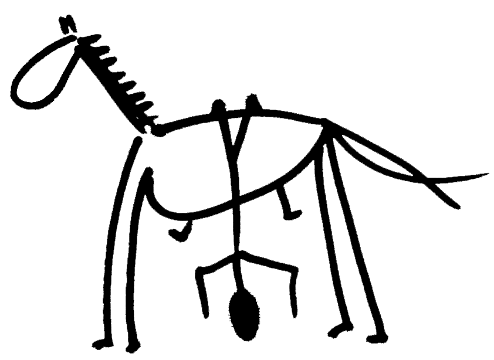

Citáty
Kdy¾ Bùh stvoøil konì, øekl nádhernému zvíøeti: "Tobì rovného jsem
neudìlal. V¹echny poklady svìta le¾í mezi Tvýma oèima."
-- Korán
Konì se nechají pøivést k vodì, ale nedají se pøinutit, aby pili.
-- ©védské pøísloví
Kùò je nejupøímnìj¹í tvor na zemi - dìlá-li nìco ¹patnì, je to pravdìpodobnì proto, ¾e jste mu to poruèili.
V¹echno je z nìjakého dùvodu pøesnì takové, jeké to je. Drobky na va¹em stole nejsou ¾ádnou mystickou pøipomínkou koláèe z dne¹ního rána. Jsou tam proto, ¾e jste se rozhodli je neuklidit. Bez výjimek.
Neexistujete proto, abyste na svìt udìlali dojem. Existujete proto, abyste ¾ili svùj ¾ivot zpùsobem, který vás uèiní ¹»astnými.
Nikdy nepocítí¹ tu pravou radost ze ¾ivota, dokud se moøe nebude
pøelévat ve tvých ¾ilách, dokud se nezahalí¹ oblohou a na hlavu si
neposadí¹ hvìzdnou korunu, dokud nepocítí¹, ¾e jsi jediným dìdicem
celého svìta, a víc ne¾ to, dokud nepocítí¹, ¾e jsou ti i jiní, ka¾dý z
nich univerzální dìdic jako ty.
-- Thomas Traherne
Nikdy se poøádnì nenauèí¹ klít, dokud se nenauèí¹ jezdit na koni.
Riding: The art of keeping a horse between you and the ground.
Bùh stvoøil konì jako druha vìtru a spoleèníka bouøe.
-- J. W. Goethe
"Professionals can't be driven -they have to be led -or they don't follow."
-- Howard
Ka¾dý, kdo bojuje s lidskou pøirozeností, prohraje.
-- Marcus Buckingham
Popírat, vìøit a pochybovat znamená pro èlovìka to, co pro konì bìh.
-- Blaise Pascal
V galerii bylo tolik historických osobností na koních, ¾e to vedlo k my¹lence, ¾e dìjiny tvoøí z poloviny konì.
-- Emil Krotkij